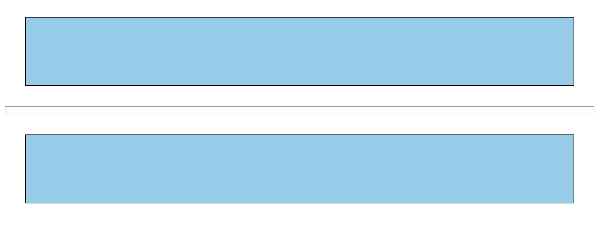

HTML 요소 1 - 텍스트 요소
1. 텍스트 요소
▶️ h1 ~ h6
block 요소로 제목을 나타낸다. h1이 가장 크고, h6가 제일 작다.
<h1>Jongbin</h1>
<h2>Jongbin</h2>
<h3>Jongbin</h3>
<h4>Jongbin</h4>
<h5>Jongbin</h5>
<h6>Jongbin</h6>
웹 접근성을 향상시키기 위해 다음과 항목이 권장된다
- 제목의 단계를 건너뛰지 않는 것이 좋다(순차적으로 진행)
- 글씨 크기를 키우기 위해 제목 태그를 사용하는 것은 좋지 않다
- 하나의 페이지에는 하나의 h1만 있는 것이 좋다
▶️ p
하나의 문단을 나타낸다(paragraph)
<p>Hello! Hello! Hello! Hello! Hello!</p>
<p>Jongbin Jongbin Jongbin Jongbin Jongbin</p>
- blcok요소이다
- space가 두개 이상 사용되도 한번만 표시 -> 개행문자나
<br>사용 - 각 문단 사이에는 한줄높이의 여백이 추가된다.
- 빈 p태그로 여백을 추가하는 것은 웹 접근성측면에서 좋지 않다 -> CSS이용
- p태그 내부에는 block요소가 올 수 없다 (block요소를 만나면 자동으로 닫힘)
- 개행문자
라인을 제어하기 위한 문자
| 개행문자 | 기능 |
|---|---|
\n |
줄바꿈 |
\b |
백스페이스 |
\t |
탭 |
\s |
스페이스 |
▶️ br
텍스트 내부에 줄바꿈을 생성
<p>jongbin is gone<br>
he is 26 years old
</p>
<!-- 다음과 같이 출력
jongbin is gone
he is 26 years old
-->
- 문단 사이의 여백을 많이 주고 싶을때
<br>을 많이 사용하는 것은 좋지 않다 - 문단 구분을
<br>로 하는 것은 웹 접근성면에서 좋지 않다(태그는 존재하지만, 빈내용) - 빈요소이다
▶️ blockquote, q
두 태그 모두 인용을 위한 태그
<blockquote>
<p>jongbin jongbin jongbin jongbin jongbin jongbin jongbin</p>
</blockquote>
<p>jongbin said, <q>hi<q><p>
<!-- jongbin said "hi" -->
<blockquote>은 block요소,<q>는 inline요소-
<q>텍스트 사이에 자연스럽게 넣을 목적으로 사용,<blockquote>는 모두 묶어서 블록처럼 사용 <blockquote>는 앞뒤로 여백이 생긴다.<q>를 사용하면 쌍따옴표가 붙는다<blockquote>와<q>는 동일하게cite속성으로 출처를 나타낼 수 있다 (사용자에게 보여지지는 않음) / 요소 내용으로 사용도 가능
▶️ pre
미리 서식이 지정된 텍스트를 나타낸다.
<pre>
\ /
\()/
||
/\
/ \
</pre>
- 개행에 상관없이 입력한 형식 그대로 출력된다
- 고정된 글꼴을 사용해 랜더링된다(모든 글자의 크기가 같음 - monospace font)
▶️ figure, figcaption
독립적인 컨텐츠를 표현한다(삽화나 다이어그램, 사진 등 문서의 주요 흐름과는 독립적)
<figure>
<img src="filePath" alt="image"/>
<figcaption>this is image</figcaption>
</figure>
- HTML5에서 새로 추가된 태그
<figure>,<figcaption>는 같이 사용됨img태그 이외 다른 태그들pre,p등 도 사용될 수 있다- 사용자에게 보여질때 들여쓰기가 조금 들어감
<figure>는 연관성이 있음을 알려준다(여러 요소를 감싸줌으로써!)<figcaption>는 설명하는 역할을 한다(꼭 들어갈 필요는 없다)
▶️ hr
수평선 (가로로 줄이 생긴다) -> 구획 내 주제 변경 등에 사용
- 문단을 나눌때 사용하는 경우가 대부분이다
- 빈요소이다(
<hr/>) - 꾸며줄 수 있는 속성이 있지만 권장하지 않는다(
align,color,size…) ➞ 대신 css를 사용하자(웹표준준수!) hr에 css를 사용할 때는 다음과 같다
<!DOCTYPE html>
<html lang="en">
<head>
<meta charset="UTF-8">
<meta name="viewport" content="width=device-width, initial-scale=1.0">
<title>Document</title>
<style>
.box {
height: 100px;
background-color: skyblue;
border: 1px solid #000;
margin: 30px;
}
hr {
height: 10px;
}
</style>
</head>
<body>
<div class="box"></div>
<hr>
<div class="box"></div>
</body>
</html>

파란색 상자 가운데 있는 것이 hr이다 height를 이용해서 높이 조정을 하고보니 input처럼 뭔가 들어가야하게 생겼다 -> `border: 0`하면 일반 박스처럼 된다
hr {
height: 50px;
background: url(./hr-css.png);
border: 0;
background-position: 0% 33%;
background-size: cover;
}

추가적으로 background-image로 지정해줄수도 있다 여기서는 이미지스프라이트 파일로 position을 지정했다
<abbr title="world wide web"> www </abbr>
<address>
경기도 수원시 ~~~
</address>
<p><bdo dir=""rtl> 오른쪽 왼쪽 <bdo><p>
<!-- rtl ➞ right to left -->
<!-- 쪽왼 쪽른오 -->
▶️ abbr
<abbr title="Jong Bin"> JB </abbr>
title 속성을 사용해서 원래의 의미를 나타낸다 (밑줄이 점선으로 표기되고, 마우스를 올리면 내용이 나온다)
▶️ address
<address>경기도 수원시 ...</address>
주소를 나타낸다(글꼴이 기울여진다) -> 지도상 주소만 나타냈었으나, 현재는 email, website, sns들도 칭한다
▶️ cite
<figure>
<blockquote>
<p> jongbin's age is 26<p>
<blockquote>
<figcaption> 출처는 <cite>종빈에게서</cite><figcaption>
</figure>
인용의 출처를 나타낸다
▶️ bdo
<p><bdo dir="rtl"> ABCD <bdo><p>
<!-- DCBA -->
양방향의 의미를 가지고 텍스트를 바꿔줌
- ltr : left to right (왼쪽에서 오른쪽으로)
- rtl : right to left (오른쪽에서 왼쪽으로)
▶️ b, strong
텍스트를 굵게 만들어준다 (결과 동일)
<pre>
1 2 3 4 5 6 7 8 9 <b>number</b>
a b c d <strong>string</strong>
</pre>
<b>: 그냥 굵게 사용하기 위해서(어느정도 강조)<strong>: 높은 중요도를 가진 것- style적으로 사용하지 않는다 ->
font-weight를 사용하면 좋을듯! - inline 요소
- 스크린리더가 읽을때도 다르다
▶️ i, em
텍스트를 기울여준다
<p>jongbin said, <i>hi</i></p>
<p>jongbin is <em>not<em> child</p>
<i>: 주위와 구분해야 하는 부분(분위기가 다름, 다른언어, 숫자 등)<em>: 강조하는 역할- style적으로 사용하지 않는다 ->
font-style을 사용하면 좋을듯! - inline 요소
▶️ mark
<p> I'm <mark>26<mark> old</p>
중요한 내용으로 하이라이트한 부분을 나타내준다(형광펜으로 칠한 것처럼)
- 색상을
background-color로 변경할 수 있다. - 스크린리더가 구별해서 읽지는 않음
▶️ small
<p>I can do it!</p>
<small>- jongbin said</small>
추가적으로 덧붙이는 텍스트를 나타냄(크기를 작게 나타냄)
▶️ sup
<p> 2<sup>10</sup> = 1024 <p>
위 첨자 요소 (ex. 제곱을 나타낼때)
▶️ sub
<p>log<sub>a</sub>1 = 0<p>
아래 첨자 요소 (ex. log 함수의 밑, 각주)
<p>장바구니<p>
<del>간장</del>
<ins>계란</ins>
<p><code>console.log()</code>는 출력한다<p>
▶️ del, ins
<p>장바구니<p>
<del>간장</del>
<ins>계란</ins>
del: delete의 의미, 삭제된 것을 나타낼 때 (inline요소)-
속성으로
cite(이슈),datetiem(일시)가 있다 - insert의 의미, 추가된 것을 나타낼 때 (inline요소)
-
속성으로
cite(이슈),datetiem(일시)가 있다 - 스크린리더가 인식하지 않음
▶️ code
<p><code>console.log()</code>는 출력하는 기능을 한다<p>
<pre>
<code>const age = 26;<code>
<code>console.log(age);</code>
</pre>
inline 요소로 코드를 나태낸다
여러줄일 경우, <pre>로 감싸고 각 줄을 <code>로 표현한다
▶️ kbd
<p> if you press <kbd>m</kbd> button, the video will mute</p>
키보드 입력 요소를 나타낸다
▶️ a
<p>If you are interested our products, visit our website</p>
<a href="https://jongbin.com">Home Page</a>
<a href="mailto:gghkdu2@gmail.com">mail</a>
<a href="tel:000-0000">phone</a>
anchor의 의미, href의 속성을 사용해서 다른 페이지로 이동하거나 하이퍼링크를 만든다
a의 요소 내용에는 텍스트만이 아닌 이미지나 문단 등등이 들어갈 수 있다-
a의 자주 사용되는 속성속성 설명 href* href속성을 사용해서 다른 페이지로 이동이 가능케한다(하이퍼링크가 가르키는 URL)
- 절대경로 및 상대경로를 사용해서 지정할 수 있다
- 작동을 하지 않게 하려면href="javascript:void(0)"을 사용하는게 좋다
- 이메일이나 전화를href의 값으로 할 수 있다. (관련 응용 프로그램이 있으면 작동)target* 링크된 URL을 표시할 위치를 명시 (기본값: _self)
-_self: 현재 창에서 해당 URL로 이동
-_blank: 새 탭을 만들어서 해당 URL로 이동
-_parent: 부모(이전)의 브라우저에서 이동 (없을 시_self와 동일)
-_top: 최상단의 브라우저에서 이동 (없을 시_self와 동일)rel* 해당 URL과 현재 페이지와의 관계를 나타냄
- 사용자에게 보여지지 않음 / 브라우저가 인식
- search, next, prev, hlep ….
▶️ Entity
공백이나 꺽쇄등(예약어)을 텍스트로 사용자에게 보여주기 위해 사용한다
<p>제목을 나타낼 때는 <h1> </h1>을 사용합니다</p>
// 결과
제목을 나타낼 때는 <h1> </h1>을 사용합니다
일반 텍스트처럼 사용하고 `&`로 시작해서 `;`로 끝난다
| 의미 | entity |
|---|---|
< |
< |
> |
> |
" |
" |
' |
' |
& |
& |
| ` ` | |
이 외 더 확인할 수 있는 사이트 https://dev.w3.org/html5/html-author/charref
다음 포스팅에서 이어서 진행하겠습니다!